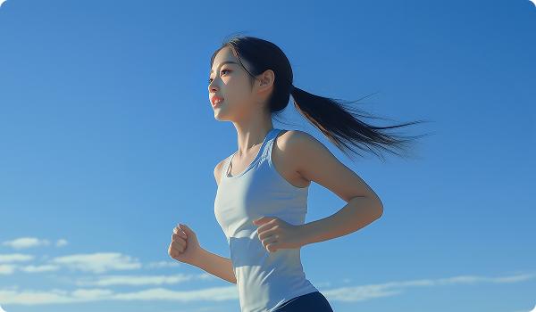
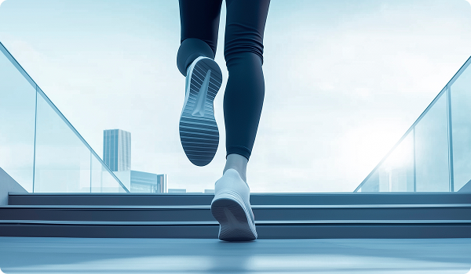
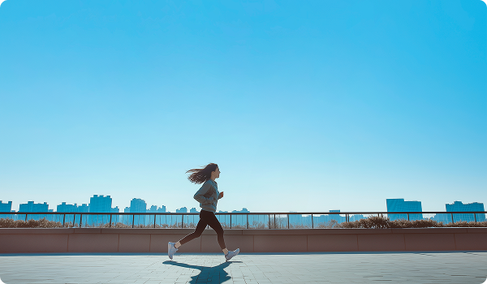
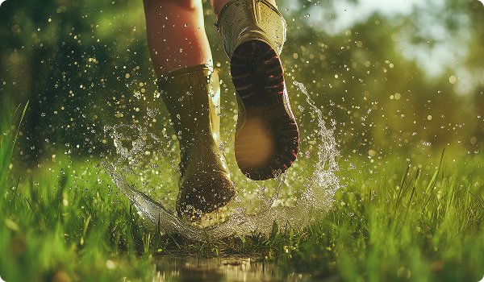

몸과 마음의 균형
진정한 건강은 몸뿐만 아니라 마음까지 편안한 상태를 의미합니다.
바쁜 일상 속에서도 잠시 쉬어가는 시간을 만들고 스트레스를 관리하는 것이 중요합니다.
충분한 휴식과 긍정적인 마음가짐은 건강한 삶의 큰 힘이 됩니다.
러닝이 우리 몸에 선사하는 '러너스 하이(Runner's High)'
러닝을 일정 시간 지속하면 어느 순간 고통은 사라지고 묘한 쾌감과 평온함이 찾아오는 상태를 경험합니다.
- 뇌의 재부팅: 러닝은 전두엽을 자극해 창의적인 사고를 돕습니다. 복잡한 기획이나 디자인 고민이 풀리지 않을 때, 30분의 러닝이 명쾌한 해답을 주는 이유도 이 때문입니다.
- 심폐 지구력의 강화: 심장은 더 튼튼해지고 혈관은 탄력을 얻습니다. 이는 일상생활에서 쉽게 지치지 않는 '강철 체력'의 근간이 됩니다.


초보자를 위한 '오래 달리기'의 기술
처음부터 전력 질주를 하면 금방 포기하게 됩니다. 러닝은 속도보다 '시간'과 '거리'에 집중해야 합니다.
- LSD(Long Slow Distance) 훈련: '옆 사람과 대화할 수 있을 정도'의 느린 속도로 길게 달리는 것입니다. 지방 연소 효율이 가장 높으며, 관절에 무리를 주지 않고 기초 체력을 쌓기에 최적입니다.
- 착지법 (Foot Strike): 발뒤꿈치부터 닿는 '리어풋'보다는 발바닥 중앙으로 착지하는 '미드풋'이 충격 분산에 유리합니다. 하지만 가장 중요한 건 본인의 몸에 무리가 가지 않는 자연스러운 걸음걸이를 찾는 것입니다.
- 호흡법: 코로 마시고 입으로 내뱉는 것을 기본으로 하되, 리듬(예: 두 발에 한 번씩 들이마시고 두 발에 한 번씩 내뱉기)을 맞추면 숨 가쁨을 훨씬 줄일 수 있습니다.
러닝을 더 즐겁게 만드는 요소들
혼자 달리는 고독함도 좋지만, 가끔은 환경에 변화를 주는 것이 좋습니다.
- 코스의 변화: 매일 같은 길만 뛰기보다 공원, 강변, 혹은 도심 속 골목길 등 코스를 바꿔보세요. 시각적인 자극이 지루함을 덜어줍니다.
- 러닝 앱 활용: 나이키 런 클럽(NRC)이나 스트라바(Strava) 같은 앱으로 자신의 기록을 쌓아보세요. 숫자로 보이는 성취감은 생각보다 강력한 동기부여가 됩니다.
- 플레이리스트: 빠른 비트의 음악은 페이스를 유지하는 데 도움을 주고, 차분한 팟캐스트는 러닝 시간을 명상의 시간으로 바꿔줍니다.


부상을 방지하는 '러닝의 골든룰'
러닝은 관절에 가해지는 하중이 체중의 3~5배에 달하기 때문에 주의가 필요합니다.
- 준비운동과 정리운동: 시작 전에는 동적 스트레칭으로 관절을 깨우고, 끝난 후에는 정적 스트레칭으로 근육을 풀어줘야 다음 날 근육통이 적습니다.
- 적절한 러닝화: 패션화가 아닌, 자신의 발 모양(평발, 요족 등)에 맞는 전용 러닝화를 착용하는 것만으로도 부상의 80%를 막을 수 있습니다.
- 휴식도 훈련이다: 매일 뛰는 것보다 주 3~4회 정도로 시작해 몸이 회복할 시간을 주는 것이 장기적으로 더 빠르게 실력이 느는 길입니다.

(00000) 서울시 강남구 테헤란로 23, 두꺼비빌딩 604호
02-000-0000
02-000-0000